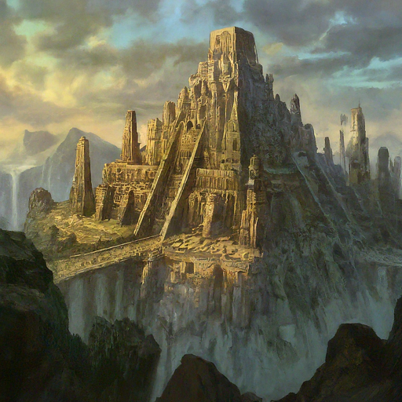

Unforgettable Sights
-
Towering Mountains
Hike through majestic peaks, explore hidden valleys, and witness breathtaking vistas.
-
Serene Rice Paddies
Experience the tranquility of lush rice fields and witness the heart of the Earth Kingdom's agriculture.

-
Thriving Cities
Explore bustling metropolises filled with rich history, diverse cultures, and architectural wonders.
Embrace Earthbending Arts
Learn the art of earthbending from skilled masters and connect with the strength and stability of the earth.
- Master basic earthbending techniques.
- Sculpt and manipulate earth to create incredible structures.
- Experience the thrill of earthbending competitions and demonstrations.
Immerse Yourself in Rich Heritage
Discover ancient traditions, vibrant festivals, and a deep respect for nature and balance.
- Witness traditional earthbending performances and tea ceremonies.
- Savor the unique flavors of Earth Kingdom cuisine, influenced by diverse regions.
- Learn about the Earth Kingdom's philosophy of harmony and responsibility.